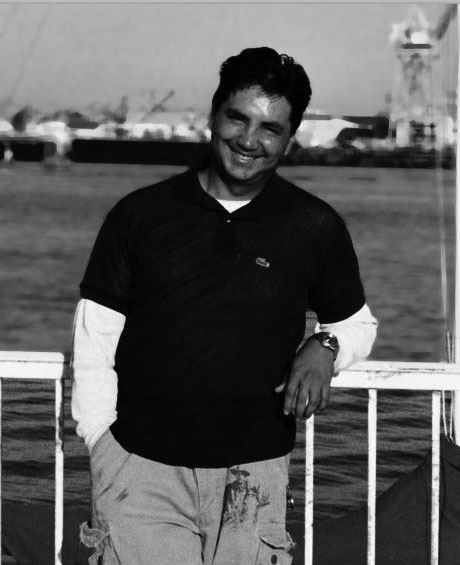

BIOGRAPHY
PHOTOGRAPHY
Originally from South America, I moved to California to
pursue advancement on my IT (Information and
Technology) career. On the side, photography is my
passion, so I’ve been shooting all around California for a
couple of years.
On fall 2013, I have to design a web site as part of one of
the subjects I’m taking at school, so, now there’s an
opportunity to show my pictures. This can be nothing but a
happy confluence of circumstances.
I hope you enjoy my pictures as much as I did creating them.
Feel free to drop me a line or two at:
francisqueins@hotmail.com